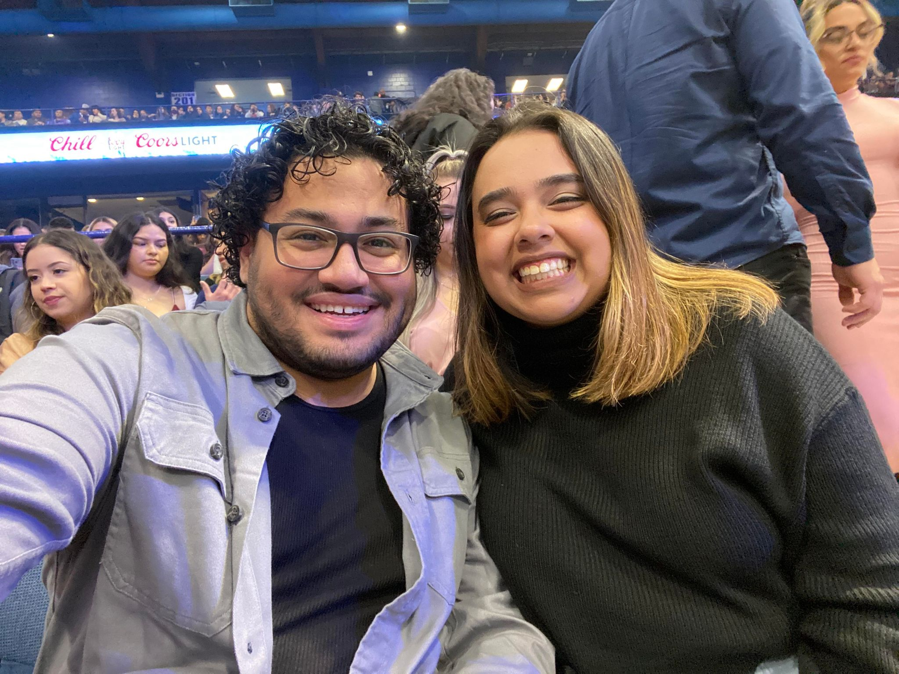
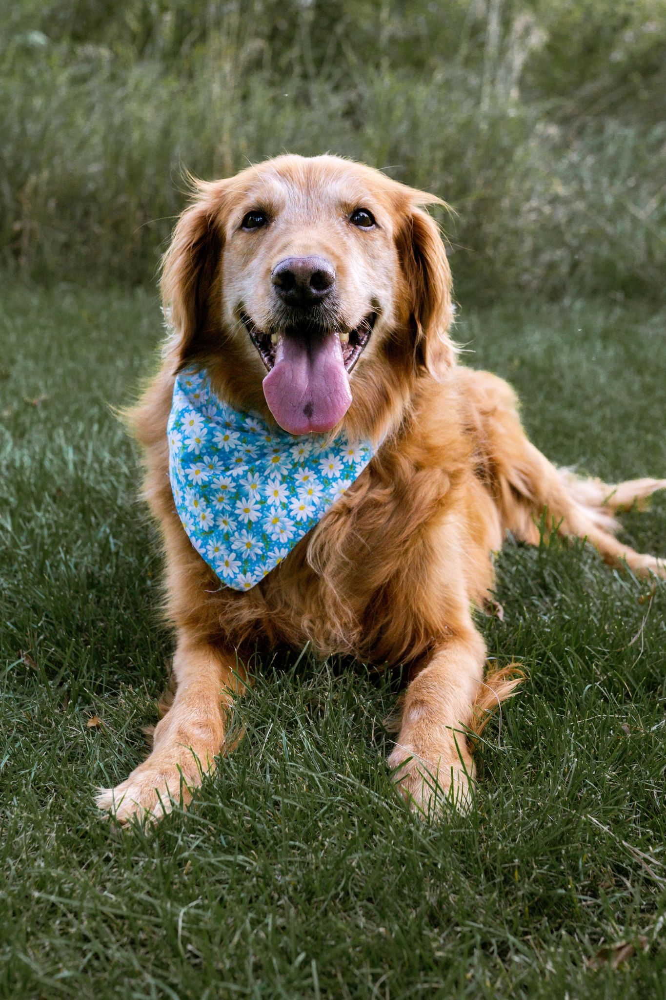

Technical Skills
HTML5, CSS, JavaScript
Canva
Email & Phone Communication
Community Outreach & Social Media Engagement
Loomly & Later
Here's all you need to know about why I am a great addition to your organization + community
+ I am an active listener
+ I am a collaborative communicator
+ I am empathetic and open minded
+ I am ready and willing to learn anything you throw my way
What am I up to now?
- Currently making graphics for fun +
for my personal bookstagram (@alina.gets.lit)
- Taking the Web Developer Bootcamp course from UDemy supplemented
with my own research and practice
-
Social Media Assistant to two separate freelance Social Media Marketing Managers. In charge
of making graphics through Canva, managing content calendars through Loomly, copywriting and
email marketing, and much more!
-
While searching for my new work family- I am traveling, reading, crafting,
working out and taking courses to supplement my knowledge and experience
Testimonials
"Alina is the best partner I could ever have. I'm actually the one who got her into web development. I love her. 5/5 stars -Isaiah Perez"
"Alina is the greatest mom I could ever have. Could use more pets though. 4/5 stars -Kirby Andino"

"So glad to have Alina on my staff. She is creative, collaborative, motivated, and a great asset to our team 6/5 stars. -Future Employer"
I want to amplify the voices of those who don't always have the platform or safe space to communicate. In my future career, I want to work with an organization and be a part of a community that cares about its people, actively listens, and communicates collaboratively to make their mission and community stronger.